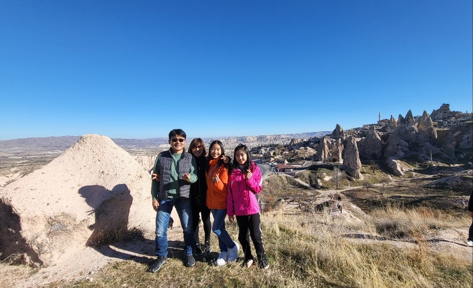

Hey! My name is Doyeon. I am a 9th grader attending Internatial Community School. I am originally from South Korea but I live in Bangkok, Thailand with my family and my dog. I love Korean food, dogs, reading alone, animals, baking, cooking, horse riding, sleeping, tulips, and the color violet! International Community School of Bangkok (ICS).
